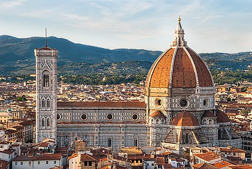
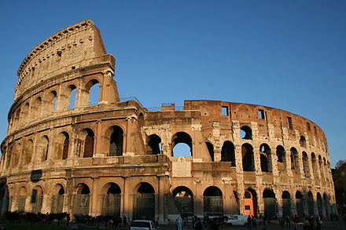
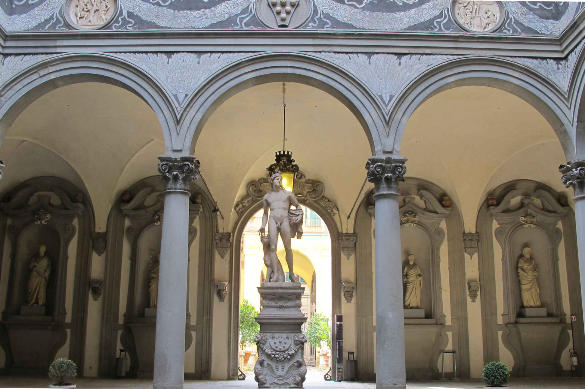
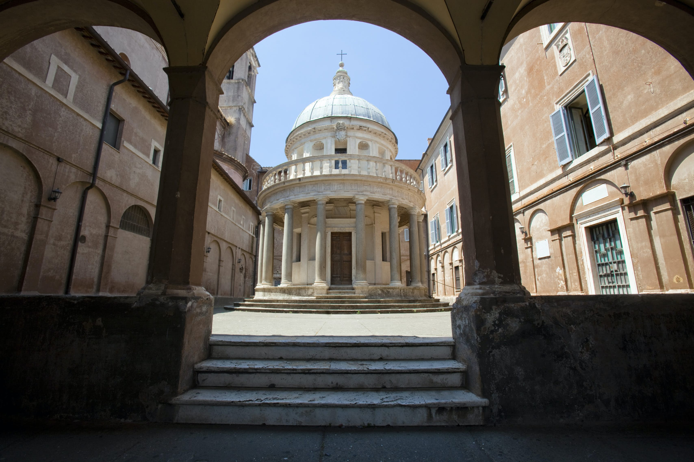

Architecture
- 
Cathedral of Santa Maria del Fiore, di Cambio and Brunelleschi, 1296-1436
- 
Colosseum, Vespasian and Titus, 72-80 AD
- 
Palazzo Medici, Michelozzo di Bartolomeo, 1444-1484
- 
Tempietto at San Pietro, Bramante, 1502
Architectural ruins from antiquity throughout Italy testify to the greatness of cultures past. The history of architecture in Italy is one that begins with the ancient styles of the Etruscans and Greeks, progressing to classical Roman, then to the revival of the classical Roman era during the Renaissance and evolving into the Baroque era. During the period of the Italian Renaissance it had been customary for students of architecture to travel to Rome to study the ancient ruins and buildings as an essential part of their education. The greatest flowering of Italian architecture took place during the Renaissance. Filippo Brunelleschi made great contributions to architectural design with his dome for the Cathedral of Florence. Leon Battista Alberti was another early Renaissance architect whose theories and designs had an enormous influence on later architects. The Baroque period produced several outstanding Italian architects in the 17th century especially known for their churches. The most important architects included Gian Lorenzo Bernini and Francesco Borromini. Numerous modern Italian architects, such as Renzo Piano, are famous worldwide. In the late 18th and early 19th centuries Italy was affected by the Neoclassical architectural movement. Everything from villas, palaces, gardens, interiors and art began to be based on Roman and Greek themes, and buildings were also widely themed on the Villa Capra "La Rotonda", the masterpiece by Andrea Palladio.